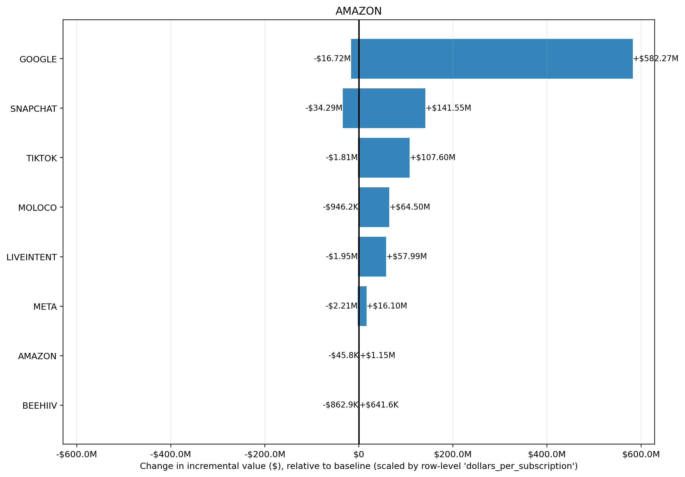

Input CSV: tornado_full_grid_run_9c64f588a395.csv
Channels altered: AMAZON
Value Scaling: scaled by row-level 'dollars_per_subscription'
Selection objective: total_new_value
Best prior setup: KPI_TYPE: NA(mu=NA, sigma=NA) | KPI_TYPE_EFFECTIVE: NA(mu=NA, sigma=NA) | PRIOR_DESIGN_MODE: NA(mu=NA, sigma=NA) | PRIOR_GRID_TYPE: NA(mu=NA, sigma=NA) | REVENUE_PER_KPI: NA(mu=NA, sigma=NA) | ROI_PRIOR_OVERRIDES: NA(mu=NA, sigma=NA) | RUN_MODE: NA(mu=NA, sigma=NA) | STRUCTURAL_OVERRIDES: NA(mu=NA, sigma=NA) | SWEEP_TYPE: NA(mu=NA, sigma=NA) | TARGET_CHANNEL: NA(mu=NA, sigma=NA) | TWO_LAYER_ENABLED: NA(mu=NA, sigma=NA)
| prior_setup | total_new_value | delta_value_vs_baseline | delta_roi |
|---|---|---|---|
| KPI_TYPE: NA(mu=NA, sigma=NA) | KPI_TYPE_EFFECTIVE: NA(mu=NA, sigma=NA) | PRIOR_DESIGN_MODE: NA(mu=NA, sigma=NA) | PRIOR_GRID_TYPE: NA(mu=NA, sigma=NA) | REVENUE_PER_KPI: NA(mu=NA, sigma=NA) | ROI_PRIOR_OVERRIDES: NA(mu=NA, sigma=NA) | RUN_MODE: NA(mu=NA, sigma=NA) | STRUCTURAL_OVERRIDES: NA(mu=NA, sigma=NA) | SWEEP_TYPE: NA(mu=NA, sigma=NA) | TARGET_CHANNEL: NA(mu=NA, sigma=NA) | TWO_LAYER_ENABLED: NA(mu=NA, sigma=NA) | $1.75B | +$930.14M | 4839.93% |
| KPI_TYPE: NA(mu=NA, sigma=NA) | KPI_TYPE_EFFECTIVE: NA(mu=NA, sigma=NA) | PRIOR_DESIGN_MODE: NA(mu=NA, sigma=NA) | PRIOR_GRID_TYPE: NA(mu=NA, sigma=NA) | REVENUE_PER_KPI: NA(mu=NA, sigma=NA) | ROI_PRIOR_OVERRIDES: NA(mu=NA, sigma=NA) | RUN_MODE: NA(mu=NA, sigma=NA) | STRUCTURAL_OVERRIDES: NA(mu=NA, sigma=NA) | SWEEP_TYPE: NA(mu=NA, sigma=NA) | TARGET_CHANNEL: NA(mu=NA, sigma=NA) | TWO_LAYER_ENABLED: NA(mu=NA, sigma=NA) | $1.71B | +$1.63M | 8.46% |
| KPI_TYPE: NA(mu=NA, sigma=NA) | KPI_TYPE_EFFECTIVE: NA(mu=NA, sigma=NA) | PRIOR_DESIGN_MODE: NA(mu=NA, sigma=NA) | PRIOR_GRID_TYPE: NA(mu=NA, sigma=NA) | REVENUE_PER_KPI: NA(mu=NA, sigma=NA) | ROI_PRIOR_OVERRIDES: NA(mu=NA, sigma=NA) | RUN_MODE: NA(mu=NA, sigma=NA) | STRUCTURAL_OVERRIDES: NA(mu=NA, sigma=NA) | SWEEP_TYPE: NA(mu=NA, sigma=NA) | TARGET_CHANNEL: NA(mu=NA, sigma=NA) | TWO_LAYER_ENABLED: NA(mu=NA, sigma=NA) | $1.54B | +$716.38M | 3727.64% |
| KPI_TYPE: NA(mu=NA, sigma=NA) | KPI_TYPE_EFFECTIVE: NA(mu=NA, sigma=NA) | PRIOR_DESIGN_MODE: NA(mu=NA, sigma=NA) | PRIOR_GRID_TYPE: NA(mu=NA, sigma=NA) | REVENUE_PER_KPI: NA(mu=NA, sigma=NA) | ROI_PRIOR_OVERRIDES: NA(mu=NA, sigma=NA) | RUN_MODE: NA(mu=NA, sigma=NA) | STRUCTURAL_OVERRIDES: NA(mu=NA, sigma=NA) | SWEEP_TYPE: NA(mu=NA, sigma=NA) | TARGET_CHANNEL: NA(mu=NA, sigma=NA) | TWO_LAYER_ENABLED: NA(mu=NA, sigma=NA) | $1.29B | +$466.49M | 2427.37% |
| KPI_TYPE: NA(mu=NA, sigma=NA) | KPI_TYPE_EFFECTIVE: NA(mu=NA, sigma=NA) | PRIOR_DESIGN_MODE: NA(mu=NA, sigma=NA) | PRIOR_GRID_TYPE: NA(mu=NA, sigma=NA) | REVENUE_PER_KPI: NA(mu=NA, sigma=NA) | ROI_PRIOR_OVERRIDES: NA(mu=NA, sigma=NA) | RUN_MODE: NA(mu=NA, sigma=NA) | STRUCTURAL_OVERRIDES: NA(mu=NA, sigma=NA) | SWEEP_TYPE: NA(mu=NA, sigma=NA) | TARGET_CHANNEL: NA(mu=NA, sigma=NA) | TWO_LAYER_ENABLED: NA(mu=NA, sigma=NA) | $1.06B | +$241.86M | 1258.49% |
| channel | delta_value | delta_roi |
|---|---|---|
| +$949.28M | 92.18% | |
| META | +$375.9K | 0.45% |
| MOLOCO | +$5.7K | 0.01% |
| LIVEINTENT | -$120.66 | -0.00% |
| AMAZON | -$23.6K | -1.50% |
| BEEHIIV | -$613.1K | -1.87% |
| TIKTOK | -$4.20M | -2.40% |
| SNAPCHAT | -$14.69M | -3.38% |
Largest sensitivity ranges are in GOOGLE (-$16.72M to $582.27M); SNAPCHAT (-$34.29M to $141.55M); TIKTOK (-$1.81M to $107.60M). Biggest upside scenario is GOOGLE at $582.27M, while the largest downside scenario is SNAPCHAT at -$34.29M. Bars crossing zero indicate the channel can either help or hurt depending on prior assumptions; wider bars indicate greater uncertainty and model sensitivity.
